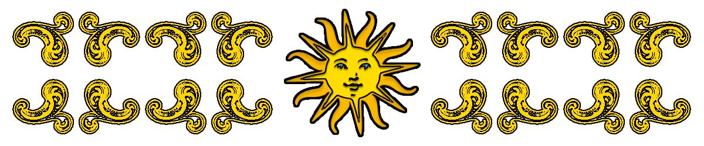
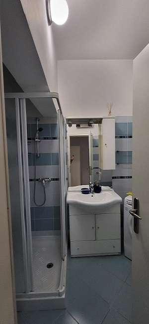
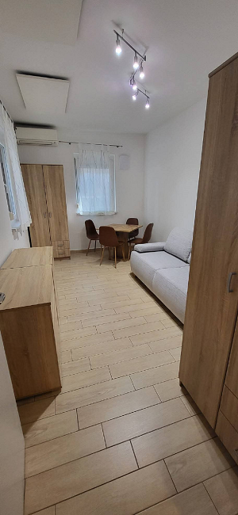
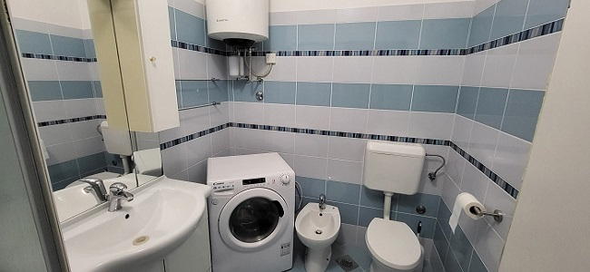
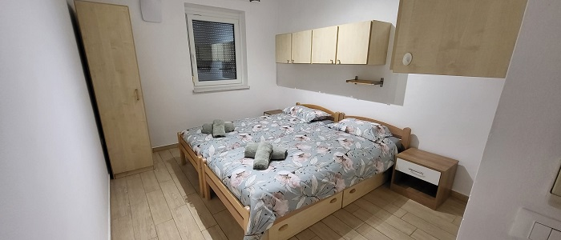
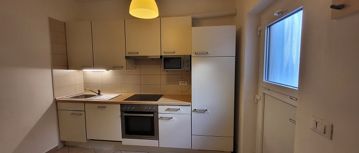

Opis
Prijeten in sodobno opremljen apartma se nahaja v starem mestnem jedru Kopra, le 5 minut
hoje do glavne plaže, pri Mokri Mački. Primernost apartmaja je do 4 osebe in ponuja vse kar
potrebujete za sproščen oddih, mir in zasebnost.
Apartma se nahaja v pritličju, vhod pa je neposredno iz ulice ter vključuje:
- Kuhinjo s pečico, mikrovalovko, hladilnik z zamrzovalno skrinjo.
- Spalnico z dvema ležiščema.
- Dnevno sobo z raztegljivim kavčem.
- Kopalnico s tuš kabino, bidejem, pralno-sušilnim strojem ter fen.
- Sistem prezračevanja prostora.
- Klimo ter ogrevanje.
- Wi-Fi oz. možnost internetne povezave.
Posebna prednost apartmaja je v tem, da imate hiter dostop do glavnih delov mesta, kjer so
restavracije, bari, trgovine, plaže in ostali kotički za sprostitev ter tudi otroška igrala.
Glavna parkirišča v starem delu Kopra se nahajajo cca. 5-8 minut proč, ob obali,
pri tržnici in v glavni parkirni hiši pod Belvederjem. Večeri po Koprski promenadi so
polni dobre glasbe, kulinarike, koncertov, in čudovitih sončnih zahodov.
Veselimo se vašega obiska!
Galerija opreme:
- Kopalnica in dnevna soba:


- Oprema v kopalnici:

- Spalnica:

- Kuhinja:

Lokacija Apartmaja
Apartma se nahaja v starem mestnem jedru, 5 min. hoje do Titovega trga.
Naslov:
Santorijeva Ulica 7a, 6000 Koper
-> Kje se nahajamo na zemljevidu? Glej:
Kontakt
Za dodatne informacije se obrnite na:
- Telefon: 064211192